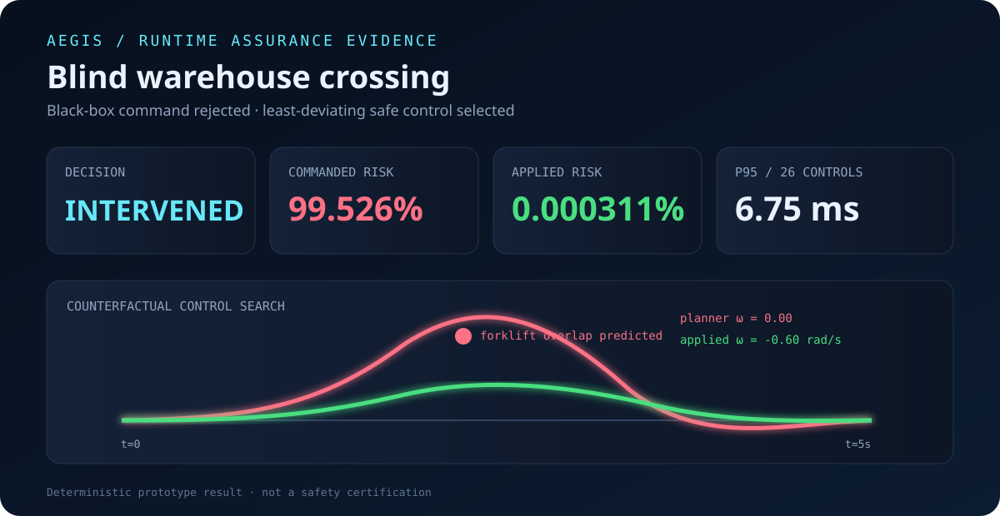

01 / UNCERTAINTY
Time-growing prediction
Obstacle position covariance expands with acceleration uncertainty instead of assuming perfect future motion.
A deterministic safety layer that predicts uncertain collisions, overrides unsafe black-box planner commands, and explains the intervention with counterfactual evidence.
An autonomous mobile robot and an uncertain forklift enter the same blind crossing. Aegis evaluates the original command plus 25 bounded alternatives, then applies the least-deviating candidate inside the configured risk envelope.

Obstacle position covariance expands with acceleration uncertainty instead of assuming perfect future motion.
The planner remains replaceable and untrusted; the supervisor owns the final command decision.
Every intervention records what changed, when risk appeared, and how much risk the alternative removed.
Scenario input, control lattice, decision JSON, and report generation are deterministic and tested.
When no candidate meets the budget, Aegis labels the result minimum-risk rather than calling it safe.
ROS 2 adapters, control barrier functions, calibrated prediction, and HIL braking validation are tracked publicly.
Aegis is a research prototype, not a certified safety component. Measurements were reproduced on one arm64 machine and are not hard real-time guarantees. The public build log records the AI-assisted development window exactly and makes no unsupported comparison with other engineers.